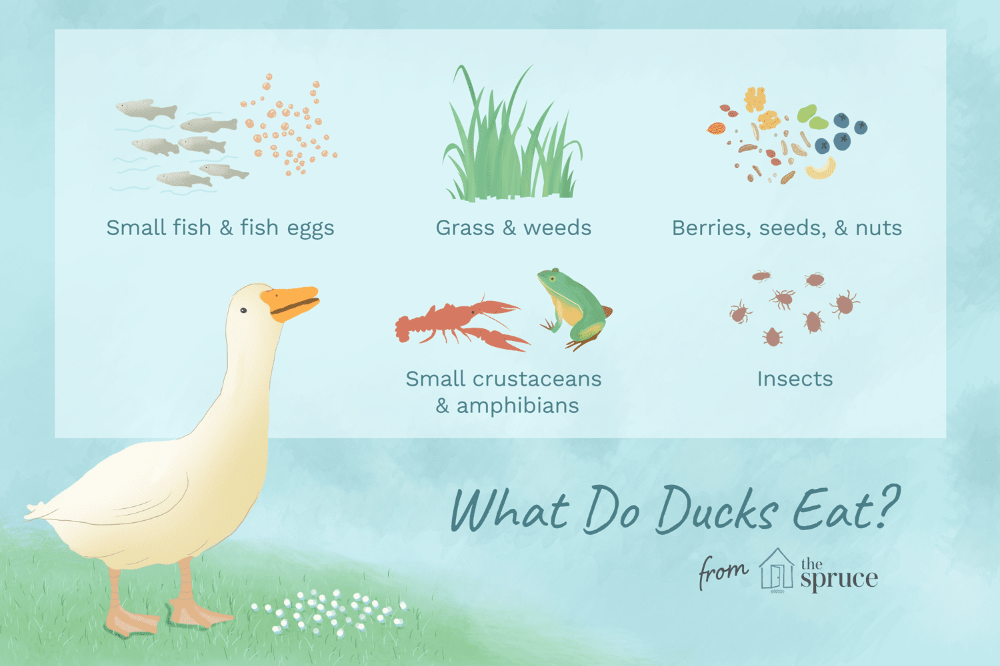
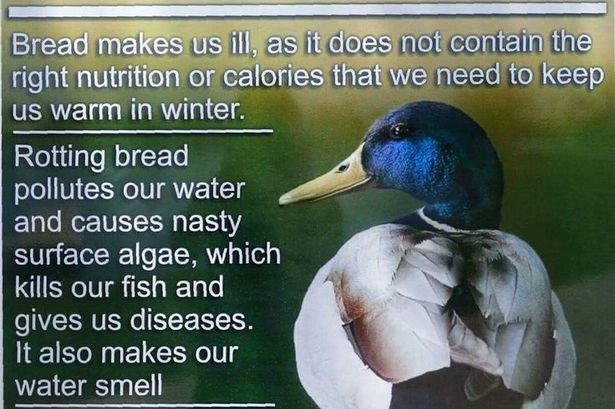
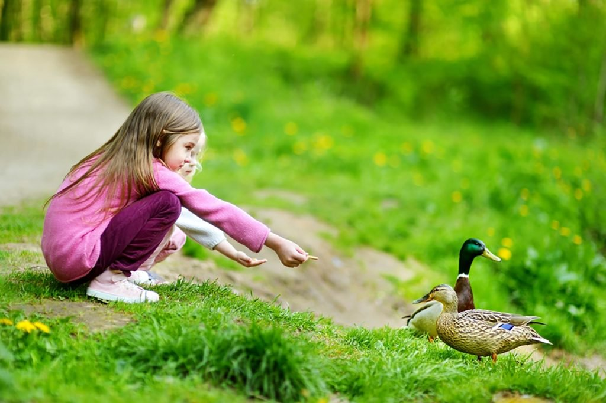

Diet

- Cracked corn
- Cracked corn
- Wheat, barley, or similar grains
- Oats (uncooked; rolled or quick)
- Rice (plain white or brown, cooked or uncooked)
- Milo seed
- Birdseed (any type or mix)
- Grapes (cut in half or quartered if very large)
- Nut hearts or pieces (any type but without salt, coatings, or flavoring)
- Frozen peas or corn (defrosted, no need to cook)
- Earthworms (fishing bait or dug from the garden)
- Mealworms (fresh or dried)
- Chopped lettuce or other greens or salad mixes
- Vegetable trimmings or peels (chopped into small pieces)

- Bread
- Chips
- Crackers
- Donuts
- Cereal
- Popcorn, and similar bread-type products and junk food scraps

- Stop feeding if the birds appear uninterested or are leaving the food uneaten, since leftover food can quickly rot and attract unwanted pests.
- Avoid feeding the ducks if other visitors are already offering treats, as too much food can lead to health problems and uneaten leftovers.
- No matter what foods you provide, only offer foods in bite-sized pieces the birds can easily consume without choking or struggling, since ducks do not chew.
- Be wary of birds that approach closely and remember that they can still be aggressive, particularly larger waterfowl such as swans and geese.
- Litter can hurt birds in many ways, so be sure to dispose of all trash properly, including bags, twist ties, plastic clips, and any unsuitable or moldy scraps.
- Do not allow pets or children to chase or disturb the birds, particularly young birds or families that could become stressed or injured more easily.
- Always check city ordinances that restrict or prohibit feeding ducks or waterfowl, and obey all local laws. Disobeying laws could result in fines or other penalties.